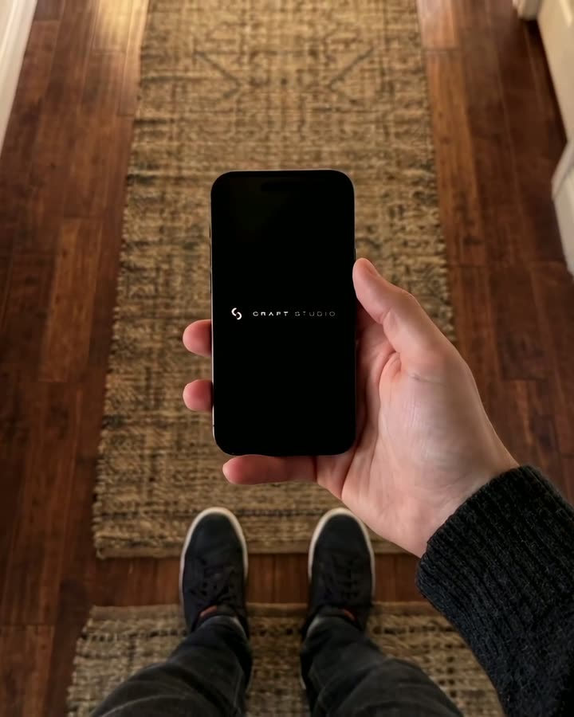
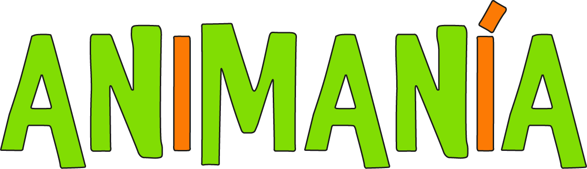
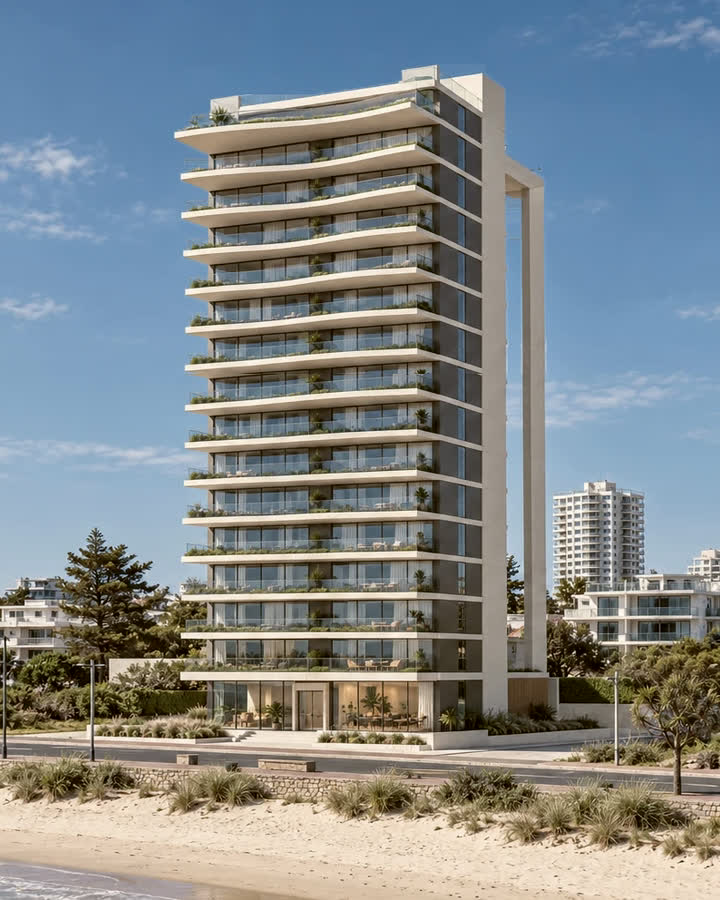

DESARROLLADOR DE SOFTWARE · ANALISTA DE DATOS
Desarrollode software.
Ideas que toman forma.

CRAFTDESARROLLADOR DE SOFTWARE · ANALISTA DE DATOS
Ideas que toman forma.
01 / PROYECTOS
Sitios y experiencias digitales desarrollados para Craft Studio, Animanía y un showroom 3D.
3 proyectos


PRESENTACIÓN DEL ESTUDIOEl sitio de Craft Studio reúne la identidad y los servicios del estudio en un recorrido visual que combina diseño, video e interacción.
La identidad y los servicios de Craft Studio.

ANIMACIÓN Y RECREACIÓN INFANTILUna web para conocer las propuestas de Animanía. La navegación, el color y las animaciones acompañan el carácter lúdico de la marca.
Propuestas de recreación y animación infantil.

EspaciosUn prototipo para recorrer edificios y unidades desde el navegador, con vistas de día, de noche y en 360°. Una exploración de cómo presentar espacios en la web.
Un prototipo para explorar espacios en 3D.
CENTRO PARA LEER · BORDES PARA GIRAR · FLECHAS PARA ELEGIR
02 / PERFIL
Soy Juan Pablo Muttoni. Me dedico al desarrollo de software y al análisis de datos: desde aplicaciones web hasta automatizaciones y tableros interactivos que facilitan el trabajo con información.
En Craft Studio conecto esa base técnica con el diseño de experiencias digitales. Uso Claude y ChatGPT para explorar alternativas, trabajar sobre prototipos y apoyar el desarrollo, con revisión y pruebas en cada etapa.
03 / CONTACTO
Un proyecto de software, una tarea que se repite o datos que necesitan orden. Podemos empezar por ahí.
Desarrollo de software · Análisis de datos
Craft Studio